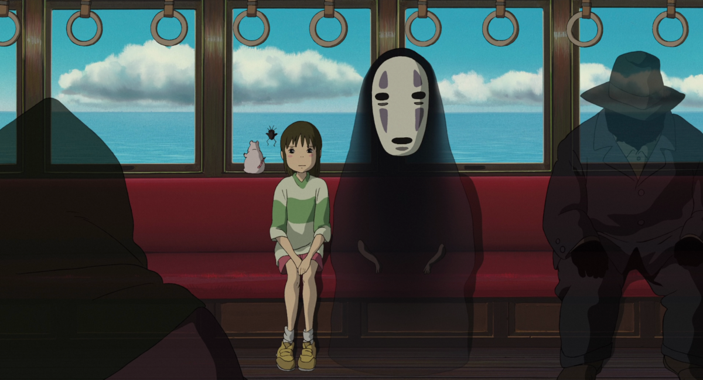
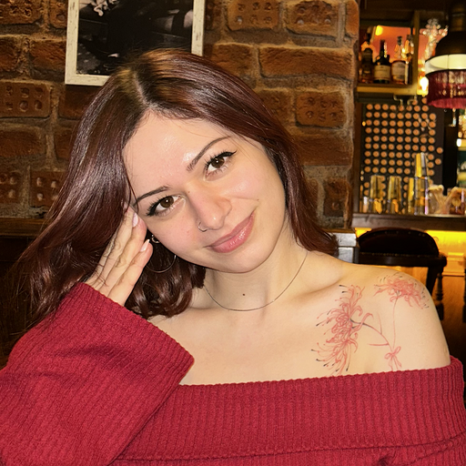

1759'da Fransa'da Etienne de Silhouette adında aşırı tutumlu bir maliye bakanı vardı. O kadar kısıtlayıcı ekonomi politikaları uyguladı, vergileri o kadar artırdı ki halk onu nefret ve alay konusu yaptı. Dönemin ressamları tam portre çizmek yerine sadece dış hattı çizilen ucuz portreleri "silhouette" olarak adlandırmaya başladı — ucuz, detaysız, cimri, tıpkı o bakan gibi. Adam tarihten silinip gitti ama adı kaldı, hem de tam anlamıyla gölge olarak.
bugün sana özel bir şey hazırladım
kedinin üstüne dokun.

arkana yaslan,
bi rahatla bakım.
hazır mısın?
valla bi sana anlattım.
unutma, her şey güzel olacak.
belki hemen değil, ama mutlaka.

Ruhun geçince
gölgeler bile güzelleşir.
İçindeki ışık,
en karanlık yerlere bile
umut bırakır.
her şey güzel olacak.

